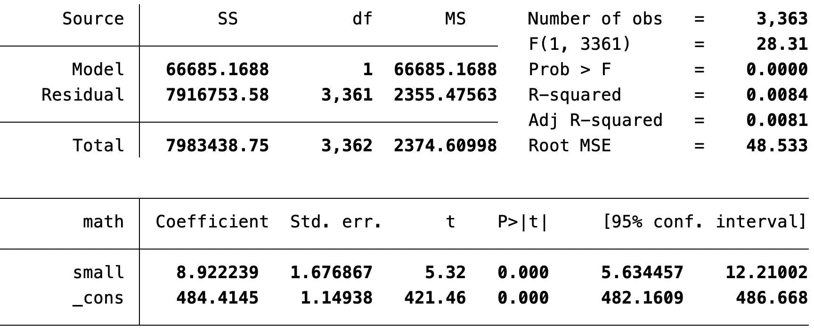
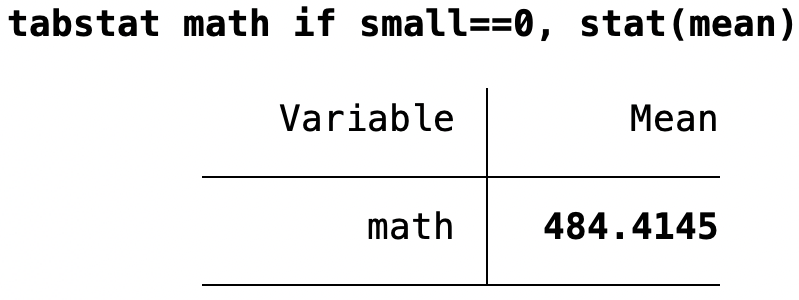
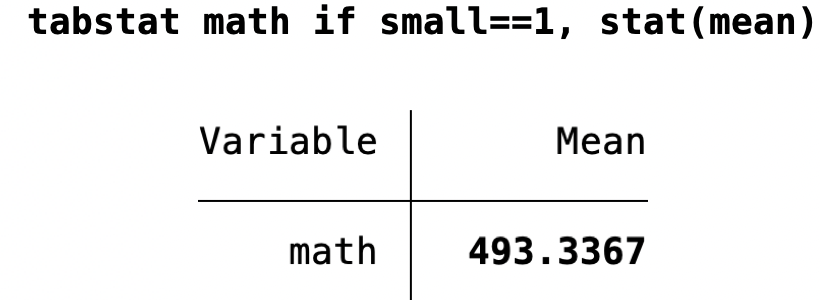

Économétrie (ECON0212)
HEC Liège
October 2026
Causalité versus corrélation
Les réalisations potentielles et le modèle de Rubin
Expérimentations aléatoires contrôlées (Randomized Controlled Trials = RCT)
Retour sur l’application empirique reliant taille d’une classe et performance des élèves
Causalité : de quoi parle-t-on ?
X cause Y si…X, sans que rien d’autre ne change…Y changerait également, en conséquence.X est le seul facteur qui cause Y.Une variable omise Z influence à la fois X et Y.
Y influence aussi X : plus de crimes → plus de policiers recrutés.
Important
À retenir : une corrélation seule n’identifie pas l’effet causal de X sur Y.
Souvent appelé le modèle causal de Rubin, en l’honneur du statisticien Donald Rubin, qui l’a généralisé et formalisé dans les années 1970.
Idée clé : chaque individu peut être exposé à plusieurs états de traitement alternatifs :
Notons la variable de traitement D_i (binaire) :
D_i = \begin{cases} 1 \textrm{ si l'individu } i \textrm{ est traité} \\ 0 \textrm{ si l'individu } i \textrm{ n'est pas traité} \end{cases}
Groupe de traitement : tous les individus tels que D_i = 1.
Groupe de contrôle : tous les individus tels que D_i = 0.
Dans ce cadre, chaque individu a deux réalisations potentielles, mais une seule réalisation observée Y_i :
Y_i = D_i \times Y_i^1 + (1 - D_i) \times Y_i^0
\rightarrow Problème fondamental de l’inférence causale :
| Groupe | Y_{i}^1 | Y_{i}^0 |
|---|---|---|
| Groupe de traitement (D_i = 1) | Observé en tant que Y_i | Contrefactuel |
| Groupe de contrôle (D_i = 0) | Contrefactuel | Observé en tant que Y_i |
\delta_i = Y_i^1 - Y_i^0
En anglais : Average Treatment Effect, ou ATE. C’est l’effet moyen le plus large possible :
\begin{aligned} ATE &= \mathop{\mathbb{E}}(\delta_i) \\ &= \mathop{\mathbb{E}}(Y_i^1 - Y_i^0) \\ &= \mathop{\mathbb{E}}(Y_i^1) - \mathop{\mathbb{E}}(Y_i^0) \end{aligned}
L’ATE mesure simplement l’effet moyen du traitement sur la population totale.
(Voir annexe) Il existe d’autres effets causaux d’intérêt.
Réalisations potentielles de la note (0-10) pour des élèves en petite (Y^1) ou en grande (Y^0) classe :
| Élève | Y^1 | Y^0 | \delta |
|---|---|---|---|
| 1 | 5 | 2 | 3 |
| 2 | 6 | 4 | 2 |
| 3 | 3 | 6 | -3 |
| 4 | 5 | 4 | 1 |
| 5 | 10 | 8 | 2 |
| 6 | 2 | 4 | -2 |
| 7 | 5 | 2 | 3 |
| 8 | 6 | 4 | 2 |
| 9 | 2 | 9 | -7 |
| 10 | 8 | 2 | 6 |
| Moyenne | 5,2 | 4,5 | 0,7 |
\begin{aligned} \color{#5b2c74}{\text{ATE}} &= \mathbb{E}(\delta) \\ &= \mathbb{E}(Y^1) - \mathbb{E}(Y^0) \\ &= 5{,}2 - 4{,}5 = 0{,}7 \end{aligned}
\rightarrow en moyenne, être dans une classe à petit effectif plutôt qu’à grand effectif améliore la note de 0,7 point.
⚠️ l’effet du traitement varie d’un élève à l’autre !
SDR = \mathbb{E}(Y_i \mid D_i=1) - \mathbb{E}(Y_i \mid D_i=0)
C’est la Simple Différence des moyennes des Réalisations (SDR).
\widehat{SDR} = \underbrace{\frac{1}{N_T}\sum_{i:D_i=1}Y_i}_{\text{moyenne, groupe traité}} - \underbrace{\frac{1}{N_C}\sum_{i:D_i=0}Y_i}_{\text{moyenne, groupe contrôle}}
Imaginons que le·la directeur·ice observe les deux résultats potentiels de chaque élève et choisisse le traitement qui maximise sa note :
| Élève | Y^1 | Y^0 | \delta | Y (observé) | D |
|---|---|---|---|---|---|
| 1 | 5 | 2 | 3 | 5 | 1 |
| 2 | 6 | 4 | 2 | 6 | 1 |
| 3 | 3 | 6 | -3 | 6 | 0 |
| 4 | 5 | 4 | 1 | 5 | 1 |
| 5 | 10 | 8 | 2 | 10 | 1 |
| 6 | 2 | 4 | -2 | 4 | 0 |
| 7 | 5 | 2 | 3 | 5 | 1 |
| 8 | 6 | 4 | 2 | 6 | 1 |
| 9 | 2 | 9 | -7 | 9 | 0 |
| 10 | 8 | 2 | 6 | 8 | 1 |
Le·la directeur·ice assigne le traitement (D=1) quand il augmente la note (Y^1 > Y^0).
\Rightarrow L’assignation dépend directement des résultats potentiels.
| Élève | Y | D | \delta |
|---|---|---|---|
| 1 | 5 | 1 | 3 |
| 2 | 6 | 1 | 2 |
| 3 | 6 | 0 | -3 |
| 4 | 5 | 1 | 1 |
| 5 | 10 | 1 | 2 |
| 6 | 4 | 0 | -2 |
| 7 | 5 | 1 | 3 |
| 8 | 6 | 1 | 2 |
| 9 | 9 | 0 | -7 |
| 10 | 8 | 1 | 6 |
| Moyenne | 0,7 |
La simple différence des réalisations moyennes :
\begin{aligned} SDR &= \frac{5+6+5+10+5+6+8}{7} \\[4pt] &\quad - \frac{6+4+9}{3} \\[4pt] &\approx 6{,}43 - 6{,}33 \approx 0{,}1 \end{aligned}
Réécrivons la SDR pour faire apparaître l’effet individuel du traitement (\delta_i) :
\begin{aligned} SDR &= \mathop{\mathbb{E}}(Y_i^1 \mid D_i=1) - \mathop{\mathbb{E}}(Y_i^0 \mid D_i=0) \\ &= \mathop{\mathbb{E}}(Y_i^0 + \delta_i \mid D_i = 1) - \mathop{\mathbb{E}}(Y_i^0 \mid D_i = 0) \end{aligned}
Simplifions en supposant que l’effet du traitement est constant entre individus : pour tout i, \delta_i = \delta. Alors :
SDR = \delta + \mathop{\mathbb{E}}(Y_i^0 \mid D_i = 1) - \mathop{\mathbb{E}}(Y_i^0 \mid D_i = 0)
Et comme ATE = \mathop{\mathbb{E}}(\delta_i) = \mathop{\mathbb{E}}(\delta) = \delta (par hypothèse) :
SDR = ATE + \underbrace{\mathop{\mathbb{E}}(Y_i^0 \mid D_i = 1) - \mathop{\mathbb{E}}(Y_i^0 \mid D_i = 0)}_\text{biais de sélection}
Annexe : Quand on relâche l’hypothèse d’effet du traitement constant, un second biais apparaît (sélection sur les gains ou hétérogénéité de l’effet). Ex: Directeur·ice assigne le traitement en fonction de \delta_i.
👉 On peut directement estimer l’ATE à partir des données !
Mêmes individus, mêmes réalisations potentielles (Y_i^0,Y_i^1) : seule l’assignation au traitement change.
Importer toy_data_2.csv (dossier exercices/, sur LOLA)
import delimited "toy_data_2.csv", clear
Variables : group_dummy (D_i), y0 (Y_i^0), y1 (Y_i^1)
Construire :
Calculer :
summarize deltatabstat y, by(group_dummy)Importer toy_data_random.csv
import delimited "toy_data_random.csv", clear
Refaire l’étape 2 de la base A.
⚠️ Recalculer Y_i, car D_i a changé.
Refaire l’étape 3 et comparer les résultats avec la base A.
Optionnel : pour A et B, calculer le biais de sélection et la sélection sur les gains, puis vérifier la décomposition de la SDR.
| A : non aléatoire | B : aléatoire | |
|---|---|---|
| ATE | ? | ? |
| SDR | ? | ? |
| Biais = SDR − ATE | ? | ? |
À discuter :
Souvent appelées « Randomized Controlled Trials » (RCT).
Les premières RCT sont menées en médecine (18ᵉ et 19ᵉ siècles).
Popularisées au début du 20ᵉ siècle par les statisticiens J. Neyman et R. A. Fisher.
Depuis, méthode de plus en plus influente, devenue progressivement une méthode d’évaluation des politiques publiques.
En économie, le prix Nobel 2019 a été attribué à trois promoteurs des RCT : Abhijit Banerjee, Esther Duflo et Michael Kremer, « for their experimental approach to alleviating global poverty ».
\textrm{note en math}_i = \beta_0 + \beta_1 \, \textrm{taille de la classe}_i + e_i
Mais pourquoi b_1^{OLS} ne permet-il d’établir qu’une corrélation, et non une relation causale ? Trois sources de biais :
Une RCT prendrait en compte tous ces biais !
Tennessee Student/Teacher Achievement Ratio Experiment (cf. Krueger, 1999)
11 600 élèves et leurs enseignants ont été assignés au hasard à l’un de ces trois groupes, de la maternelle au CE1 :
Importer les données star_data.dta (use "star_data.dta", replace).
Quelle est l’unité d’observation ? Quelle variable contient : (i) l’affectation (aléatoire) de classe, (ii) le niveau scolaire de l’élève, (iii) la variable d’intérêt ?
Combien y a-t-il d’observations ? Pourquoi autant, si 11 598 élèves ont participé ? Pourquoi y a-t-il tant de valeurs manquantes ? À quoi correspondent-elles ?
Ne gardez que les observations pour lesquelles read, math, ladder et tethnicity ne sont pas manquants.
Vérifions que la randomisation a bien été faite, en construisant une table de balancing checks : calculez, par groupe de niveau et de traitement, les pourcentages de filles, d’afro-américains, et de bénéficiaires de repas gratuits (free lunch).
Nous venons de voir que, dans une RCT, l’effet moyen du traitement (ATE) s’obtient en calculant la différence de résultats entre groupe de traitement et groupe de contrôle.
Concentrons-nous sur :
| test | moyenne (classe normale) | moyenne (petite classe) | ATE |
|---|---|---|---|
| math | 484.41 | 493.34 | 8.93 |
| read | 435.76 | 441.15 | 5.39 |
Quelle est l’interprétation de ces ATE ?
Y_i = D_i Y_i^1 + (1-D_i) Y_i^0
En développant et en regroupant, avec \delta_i = Y_i^1 - Y_i^0 :
Y_i = Y_i^0 + D_i(Y_i^1 - Y_i^0) = Y_i^0 + D_i \, \delta_i
En supposant un effet constant, \delta_i = \delta pour tout i, puis en ajoutant \mathbb{E}[Y_i^0] - \mathbb{E}[Y_i^0] = 0 :
Y_i = \underbrace{\mathbb{E}[Y_i^0]}_{b_0} + \delta D_i + \underbrace{Y_i^0 - \mathbb{E}[Y_i^0]}_{e_i}
Pourquoi l’estimateur MCO de \delta est-il sans biais ? Il faut que : \mathbb{E}[e_i \mid D_i] = 0 Cela signifie que Y_i^0 est, en moyenne, le même dans le groupe traité et le groupe de contrôle : \mathbb{E}[Y_i^0 \mid D_i=1]=\mathbb{E}[Y_i^0 \mid D_i=0]
\Rightarrow pas de biais de sélection (L’assignation aléatoire garantit cette condition).
Modèle estimé : \text{score en math}_i = \beta_0 + \delta \, \text{small}_i + e_i

b_0 = \mathbb{E}[Y_i^0]

\delta = \mathbb{E}[Y_i \mid D_i = 1] - \mathbb{E}[Y_i \mid D_i = 0]

\delta = 493{,}3367 - 484{,}4145 = 8{,}9222
Rappel du modèle : \text{score en math}_i = b_0 + \delta \, \text{small}_i + e_i
\begin{aligned} \mathbb{E}[\textrm{score} \mid \text{small}_i = 0] &= \mathbb{E}[b_0 + \delta \, \text{small}_i + e_i \mid \text{small}_i = 0] \\ &= b_0 + \delta \, \mathbb{E}[\text{small}_i \mid \text{small}_i = 0] + \mathbb{E}[e_i \mid \text{small}_i = 0] = b_0 \end{aligned}
\begin{aligned} \mathbb{E}[\textrm{score} \mid \text{small}_i = 1] &= \mathbb{E}[b_0 + \delta \, \text{small}_i + e_i \mid \text{small}_i = 1] \\ &= b_0 + \delta \, \mathbb{E}[\text{small}_i \mid \text{small}_i = 1] + \mathbb{E}[e_i \mid \text{small}_i = 1] = b_0 + \delta \end{aligned}
\begin{aligned} ATE &= \mathbb{E}[\textrm{score} \mid \text{small}_i = 1] - \mathbb{E}[\textrm{score} \mid \text{small}_i = 0] \\ &= b_0 + \delta - b_0 = \delta \end{aligned}
On le savait déjà, mais on comprend maintenant pourquoi c’est vrai ✌️.
Les RCT ont une forte validité interne, c’est-à-dire qu’elles permettent d’établir le lien causal de manière très convaincante.
Elles présentent toutefois certaines limites :
Sélectionner les élèves de CE1 (first grader) dans une classe à taille petite ou normale.
Calculer la note moyenne en mathématiques pour les classes de taille normale et petite, ainsi que la différence entre les deux.
Créer une variable binaire treatment, égale à 1 si l’élève est dans le groupe de traitement (petite classe), et à 0 s’il/elle est dans le groupe de contrôle (classe normale).
Régresser la note en mathématiques sur la variable de traitement. Les résultats sont-ils cohérents avec la question 2 ?
Comment interpréter les coefficients ?
On ne peut pas toujours s’appuyer sur des RCT pour se simplifier la vie.
\Rightarrow il faut trouver une manière de faire de l’inférence causale à partir de données réelles (et non de données expérimentales).
Deux sources de sélection à traiter différemment :
✅ Comment gérer les données ? Ouvrez-les, ordonnez-les, visualisez-les…
🚧 Comment résumer une relation entre plusieurs variables ? Régression linéaire simple… à suivre
✅ Qu’est-ce que la causalité ?
❌ Comment faire si nous n’observons qu’une partie de la population ?
❌ Nos résultats sont-ils uniquement dus au hasard ?
❌ Comment trouver de l’exogénéité en pratique ?
Contact
Un grand merci à Malka Guillot pour avoir partagé les supports de ce cours, ainsi qu’à Florian Oswald et à toute l’équipe de ScPoEconometrics pour leur livre et leurs ressources.
D’autres effets moyens conditionnels peuvent être intéressants :
Average Treatment on the Treated (ATT)
\begin{aligned} ATT &= \mathop{\mathbb{E}}(\delta_i \mid D_i = 1) \\ &= \mathop{\mathbb{E}}(Y_i^1 - Y_i^0 \mid D_i = 1) \\ &= \mathop{\mathbb{E}}(Y_i^1 \mid D_i = 1) - \mathop{\mathbb{E}}(Y_i^0 \mid D_i = 1) \end{aligned}
L’ATT mesure l’effet moyen du traitement, conditionnel au fait d’être dans le groupe de traitement.
Exemple : l’effet de participer à un programme de formation (traitement) pour celles et ceux qui y ont participé (groupe de traitement).
Average Treatment on the Untreated (ATU)
\begin{aligned} ATU &= \mathop{\mathbb{E}}(\delta_i \mid D_i = 0) \\ &= \mathop{\mathbb{E}}(Y_i^1 - Y_i^0 \mid D_i = 0) \\ &= \mathop{\mathbb{E}}(Y_i^1 \mid D_i = 0) - \mathop{\mathbb{E}}(Y_i^0 \mid D_i = 0) \end{aligned}
L’ATU mesure l’effet moyen du traitement, conditionnel au fait d’être dans le groupe de contrôle.
Exemple : l’effet d’aller dans une école privée (traitement) pour des élèves venant d’une école publique (groupe de contrôle).
Remarque : dans la majorité des cas, ATE \neq ATT \neq ATU ! retour
On relâche maintenant l’hypothèse que l’effet du traitement est constant entre individus.
Après de longs calculs que l’on peut sauter, la SDR se décompose ainsi :
SDR = ATE + \underbrace{\mathop{\mathbb{E}}(Y_i^0 \mid D_i = 1) - \mathop{\mathbb{E}}(Y_i^0 \mid D_i = 0)}_\text{biais de sélection} + \underbrace{(1-\pi)(ATT - ATU)}_\text{effet hétérogène du traitement}
où 1-\pi est la part des individus dans le groupe de contrôle.
Une nouvelle source de biais apparaît, liée à une possible hétérogénéité de l’effet individuel du traitement \delta_i (sélection sur les gains).
Deux sources de biais coexistent dans la SDR dès que l’effet du traitement est hétérogène :
Dans l’exemple du/de la directeur·ice (\pi = 0{,}7), le biais de sélection seul n’explique pas l’écart entre SDR et ATE :
\underbrace{0{,}1}_{SDR} \approx \underbrace{0{,}7}_{ATE} + \underbrace{(3{,}71 - 6{,}33)}_{\text{biais de sélection}} + \underbrace{0{,}3 \times (2{,}71 - (-4))}_{\text{effet hétérogène}}